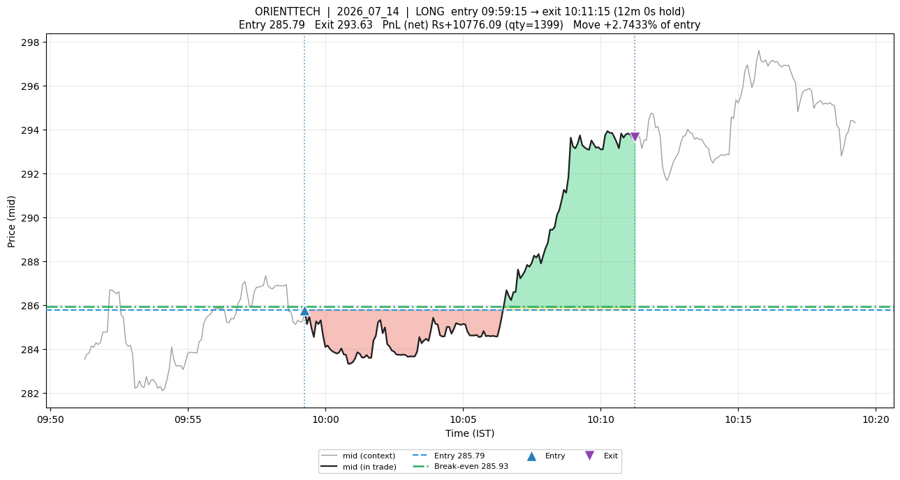
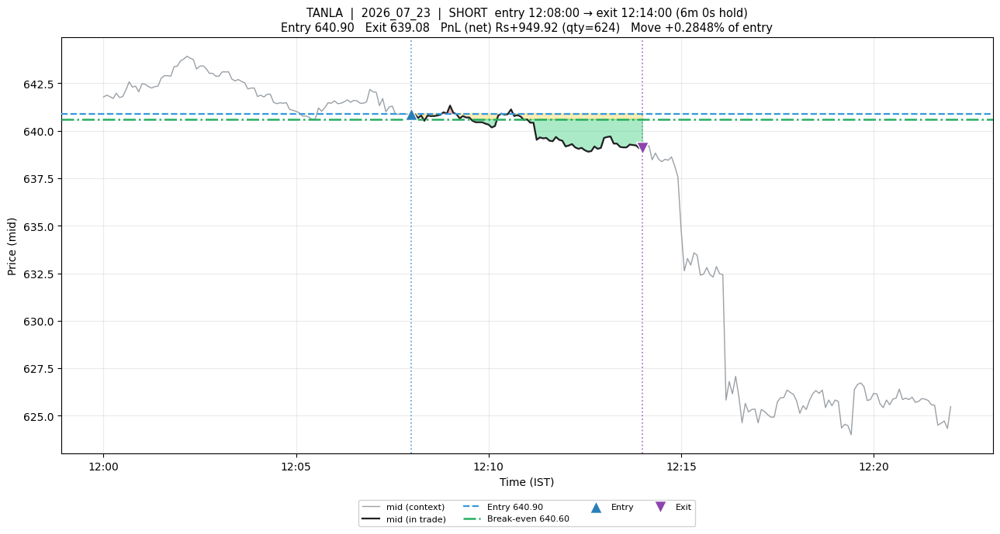

An exit model that never sees an entry signal
Almost every exit rule in retail quant is evaluated downstream of an entry signal, which means you can never tell whether a good backtest came from the entry or the exit. I wanted the two separated at the level of measurement, not just at the level of code. The harness works; the first model built on it loses to a two-clause heuristic with no model at all.
Almost everything written about trade exits is downstream of an entry. You have a signal, it fires, you hold, and then some rule tells you when to get out. If the resulting backtest makes money, you have learned that the combination works. You have learned almost nothing about the exit. Swap in a different entry and the exit's contribution is unmeasured all over again.
This bothered me enough to make it the whole project. I wanted an exit rule to be falsifiable on its own — trainable with no entry model in sight, and gradeable across entries of every quality. What follows is the design, the result, and the part where the model I built to live in the rig lost to a two-clause heuristic with no parameters.
A note on how this was made: the ideas, the framing, and every design decision below are mine. The implementation — roughly ten thousand lines of Python across dataset construction, feature engineering, the evaluation harness, and the plotting — was executed with Claude Code CLI acting as the engineer while I directed. I mention this because the division of labour is genuinely relevant to how fast the thing got built and to which mistakes got caught, a point I come back to at the end.
The problem with grading an exit
Consider what an exit rule has to handle. Sometimes you enter and the trade immediately works, and the job is to not get out too early. Sometimes you enter and it immediately fails, and the job is to cut. Sometimes nothing happens for fifteen minutes. And sometimes — the nastiest case — the trade goes against you for six minutes and then works, so the correct action mid-flight looks identical to the incorrect one.
If your entry signal is any good, you rarely see the bad cases. If it is bad, you rarely see the good ones. Either way the mix of situations your exit rule gets tested against is an accident of your entry signal, and the rarest situations — the ones that actually discriminate between exit rules — barely appear at all.
So I inverted it. Instead of letting an entry signal choose the situations, I generate them deliberately: place entries on a fixed 60-bar stride across every symbol-day, in both directions, with no selection and no alpha whatsoever. Then, after the fact, label each window by what the future actually did:
- GIFT — the entry was good and stayed good.
- TRAP — the entry looked fine and went wrong.
- CHOP — nothing happened.
- FADE — it worked, then gave it all back.
- SHAKEOUT — it went against you first, then worked. The hard one.
These labels are pure hindsight, which is exactly the point. They are never features and never reach the model. They are the strata of a test, used to guarantee the exit rule is graded on all five shapes rather than on whatever mix nature happened to deliver. I have started calling this the oracle harness.
The separation is enforced at three points. Training never sees an entry signal, because entries are on a blind stride. The label is entry-agnostic: the model predicts how much further the position can travel from where it currently stands, so a GIFT and a TRAP sitting at the same unrealised P&L, the same elapsed time, and the same order-flow state produce the same label distribution. And evaluation deliberately spans entry quality by construction.
Does the harness actually buy anything?
This is the part worth checking before trusting anything else, and it is the result I would defend most confidently:
| Entry set | Best policy | Worst policy | Spread |
|---|---|---|---|
| Oracle harness (520 trades) | −0.53 bps | −9.77 bps | 9.24 bps |
| Natural entries (1,000 trades) | −5.96 bps | −8.19 bps | 2.23 bps |
Six exit policies spread about four times wider on the oracle harness than on random entries. On natural entries every paired comparison is statistically indistinguishable from zero — all five confidence intervals straddle it — because the shapes that discriminate between exit rules are 0.34% (shakeout) and 1.97% (fade) of reality. You cannot measure a rule's handling of a case that occurs three times in a thousand.
That is the argument for the harness, and it is the reusable deliverable. Everything after this is a tenant of the rig.
The model, and the honest result
The first tenant was a continuation-value model: for every bar of every open position, predict how much additional favourable movement remains available, in units of the name's own volatility. Thirty-four causal features across position state, urgency, path shape, order flow, volatility, regime, and cost. A LightGBM quantile regressor. Roughly 8.5 million training rows, 4.7 million out-of-sample, with a two-day purge gap between train and test.
The prediction quality is genuinely good. Out of sample, broken down by archetype:
| Archetype | Base rate | Precision | Decision edge |
|---|---|---|---|
| shakeout | 0.902 | 0.986 | +0.4148 |
| gift | 0.824 | 0.940 | +0.3450 |
| chop | 0.502 | 0.771 | +0.0619 |
| fade | 0.553 | 0.672 | +0.1397 |
| trap | 0.380 | 0.483 | +0.0355 |
It holds shakeouts and gifts with high precision while cutting chop hardest. That is the correct set of responses, produced by one rule, which is exactly what an earlier attempt could not do.
And then it loses money. Across six sampler seeds it averages −6.08 bps against a baseline called never_stop — a two-clause heuristic, no model, no fitting — which manages −3.61 bps. A mean paired loss of −2.47 bps, losing in five of six seeds. A 3×5 grid over its two knobs produced no cell that significantly beats the baseline.
I want to be careful about what that does and does not establish, because my first draft of this overstated it. A single run reported the loss as −4.97 bps with a confidence interval excluding zero, which reads as a clean significant result. Running six seeds that differ only in which entries get drawn put the mean at −2.47 bps with just one of six seeds individually significant. Every policy's level moves by 4.5–5.3 bps on seed alone — larger than most effects in the study. The direction survives; the magnitude I first reported was roughly double the truth.
That is a lesson about the harness as much as the model: pairing removes most of the sampling noise that makes the raw levels unusable, so the paired delta is trustworthy at a resolution the levels are not.
Why a good model loses to a dumb rule
The diagnosis is the interesting part, and two things point the same way.
First, the exit-reason mix. The continuation model fires a single clause — continuation_exhausted — on 99.6% of trades. It is a single-threshold rule wearing a model's coat. The model varies when the threshold gets crossed but never which consideration ends the trade. The baseline that beats it uses three distinct mechanisms: a stall clock, a giveback trail, and a deadline.
Second, the sweep collapses. Both tuning knobs turn out to slide along the same axis — holding time — and every setting that raises performance on gifts raises damage on traps proportionally. GIFT ranges from +11.8 to +68.6 bps across the grid while TRAP moves from −25.1 to −79.9 in lockstep. The continuation framing did not escape that conservation trade-off; it just parameterises movement along it.
Two trades from the top of the ranked plot set carry the whole mechanism. I ranked every trade by how much the exit rule changed the outcome versus baseline, so the cases that actually carry the claim sort first.

Rank 1, where the model wins. ORIENTTECH long, entry ₹285.79. The red band is six minutes underwater, down to ₹283.6, before the move to ₹293.63. The baseline's stall clause fires during that flat adverse stretch and books a loss; the continuation model keeps predicting enough remaining travel to hold, and captures 96% of the available move. This is the shakeout-shaped behaviour the model is genuinely excellent at.

Rank 2, where it loses, and why the aggregate is negative. TANLA short. The continuation threshold fires early and banks about ₹872 where the baseline rides its giveback trail to roughly ₹9,016. This is the GIFT column in one picture: the model exits winners too early, and on a set that is 200 of 520 gifts, that costs more than its shakeout skill earns.
Put those together and you have the finding. The model's conditional judgement is good — 0.986 precision on the hardest archetype is not noise. Its threshold leaves money on the table. The second effect is larger on this entry mix, so a rule with real information loses to a rule with none.
Which is why I filed this as an unresolved no rather than a dead one. The obvious fix is untried: route the same predictions through the three-clause structure that already works, letting the continuation estimate modulate the giveback fraction and the stall clock rather than replace them. The model has information; it has not yet been given a decision rule capable of expressing it.
The bug that nearly became a triumph
One methodological note, because it is the kind of thing that quietly ruins studies.
Midway through, the hand-rolled forecaster baselines scored a pinball loss of 337 against the ridge model's 0.11 — a 3000× gap that would have been written up as spectacular model skill. It was an artifact. Six features had unbounded tails; the worst, a realised-volatility ratio, had a median of 0.18, a 99th percentile of 3,996, and a maximum of 6,633. It divides a volatility estimate by σ, and while the σ floor bounds the denominator it does not bound the ratio. One stale or jumpy mid-price bar was enough to poison the baselines and make the comparison meaningless.
I caught it by auditing a result that looked too good, which is the correct trigger for an audit. But it had already produced one reported comparison that was wrong. The fix was per-feature clipping above each observed 99th percentile, with causality re-verified afterwards.
That verification is worth describing on its own, because it is the piece I would carry into any other project. Rather than asserting the features are causal, the check recomputes the entire feature matrix on truncated market data and asserts the prefix is unchanged. Worst deviation across eighty real windows: exactly zero. It caught a genuine subtlety on its first run — a feature may legitimately know when the deadline is, since that is fixed at entry, but must not know anything about what happens before then.
On the division of labour
I said at the top that the ideas were mine and the execution was Claude Code's, and I want to be specific rather than gestural about it, because "AI wrote it" covers a range of arrangements that differ enormously.
What I supplied: the central idea of an exit as an independently trainable capability; the oracle-harness design and the archetype taxonomy; the insistence that both entry sets be scored on every run; the demand that excursion plots be generated exhaustively rather than selectively; and the calls on what counted as a result versus a lead. At one point the implementation drifted toward evaluating only on random entries and treating the oracle set as contaminated — which misses the entire point of the construction, since the oracle set is the instrument. I caught that and corrected it, and the report carries the correction.
What Claude Code supplied: essentially all of the code, at a speed I could not match by hand, plus a genuinely useful pedantry about its own results. The seed-stability study that halved my headline effect was not something I asked for in those terms; it emerged from a disagreement about whether a single significant confidence interval meant anything.
The failure mode I watched for throughout is the obvious one: a coding agent will cheerfully produce a beautiful backtest that measures its own assumptions. The defences that mattered were structural rather than supervisory — the causal-feature verifier, the paired bootstrap grouped by symbol-day so correlated observations are not treated as independent, the exhaustive rather than cherry-picked plot set, and running every cost figure through a validated cost library instead of a rule-of-thumb. None of those are things you bolt on at the end. They are the reason I trust the negative result.
And the negative result is the deliverable here, alongside the rig. An exit model can now be trained with no entry model and graded across good, medium, and bad entries, where policies separate about four times more cleanly than on random entries. The first model built on it predicts well and does not pay. Both of those are worth knowing, and the second is only interesting because the first makes it measurable.